Preprocessing: Targeted Metabolomics and DDA Proteomics of Method Development cohort
Qian-Wu Liao
Last updated: 2023-12-06
Checks: 6 1
Knit directory: SMART-CARE_LungCancer/
This reproducible R Markdown analysis was created with workflowr (version 1.7.0). The Checks tab describes the reproducibility checks that were applied when the results were created. The Past versions tab lists the development history.
Great! Since the R Markdown file has been committed to the Git repository, you know the exact version of the code that produced these results.
Great job! The global environment was empty. Objects defined in the global environment can affect the analysis in your R Markdown file in unknown ways. For reproduciblity it’s best to always run the code in an empty environment.
The command set.seed(20230425) was run prior to running
the code in the R Markdown file. Setting a seed ensures that any results
that rely on randomness, e.g. subsampling or permutations, are
reproducible.
Great job! Recording the operating system, R version, and package versions is critical for reproducibility.
Nice! There were no cached chunks for this analysis, so you can be confident that you successfully produced the results during this run.
Using absolute paths to the files within your workflowr project makes it difficult for you and others to run your code on a different machine. Change the absolute path(s) below to the suggested relative path(s) to make your code more reproducible.
| absolute | relative |
|---|---|
| /Users/qianwu/Desktop/SMART-CARE_LungCancer | . |
Great! You are using Git for version control. Tracking code development and connecting the code version to the results is critical for reproducibility.
The results in this page were generated with repository version 7f8311b. See the Past versions tab to see a history of the changes made to the R Markdown and HTML files.
Note that you need to be careful to ensure that all relevant files for
the analysis have been committed to Git prior to generating the results
(you can use wflow_publish or
wflow_git_commit). workflowr only checks the R Markdown
file, but you know if there are other scripts or data files that it
depends on. Below is the status of the Git repository when the results
were generated:
Ignored files:
Ignored: .DS_Store
Ignored: .RData
Ignored: .Rhistory
Ignored: analysis/.DS_Store
Ignored: code/.DS_Store
Ignored: data/.DS_Store
Ignored: output/.DS_Store
Untracked files:
Untracked: analysis/feature_selection.Rmd
Untracked: code/archive/
Untracked: code/dataset_list.R
Untracked: code/workflowr_commands.R
Untracked: data/Discovery/
Untracked: data/MethodDev/
Untracked: data/aliquot_metadata.xlsx
Untracked: data/patient_metadata.xlsx
Untracked: data/sample_metadata.xlsx
Untracked: output/MethodDev/
Untracked: output/SC_meeting/
Note that any generated files, e.g. HTML, png, CSS, etc., are not included in this status report because it is ok for generated content to have uncommitted changes.
These are the previous versions of the repository in which changes were
made to the R Markdown
(analysis/MethodDev_01_preprocessing_targeted_DDA.Rmd) and
HTML (docs/MethodDev_01_preprocessing_targeted_DDA.html)
files. If you’ve configured a remote Git repository (see
?wflow_git_remote), click on the hyperlinks in the table
below to view the files as they were in that past version.
| File | Version | Author | Date | Message |
|---|---|---|---|---|
| Rmd | bba1011 | LiaoQianWu | 2023-11-17 | Rearrange file locations and redo preprocessing of all method development datasets |
Description: Preprocess Tissue and Plasma Targeted Metabolomics data generated by AG Hell and Tissue and Plasma DDA Proteomics from AG Krijgsveld, which includes data cleansing, data normalization, and in the end, storing all needed information of each dataset (4 in total) in SummarizedExperiment objects for further analyses.
Load libraries
library('readr')
library('readxl')
library('vsn')
library('pwr')
library('SummarizedExperiment')
library('ggrepel')
library('tidyverse')
# Load user-defined functions
source('./code/misc.R')
# Set plot theme
th <- theme_bw(base_size = 15) +
theme(axis.title = element_text(face = 'bold'),
axis.text = element_text(face = 'bold'),
axis.ticks = element_line(linewidth = 0.8),
legend.text = element_text(size = 15))# Load sample metadata
smpMetadat <- readxl::read_excel('./data/sample_metadata.xlsx')
colnames(smpMetadat) <- smpMetadat[3,, drop = F]
smpMetadat <- dplyr::slice(smpMetadat, -c(1:3)) %>%
dplyr::select(c(Code, Parents, Visit, `Material submitted`, `Date and time of collection or surgery`,
`SMART-CARE cohort identifier`)) %>%
dplyr::rename(Sample = Code, Patient = Parents, TimePoint = Visit, SmpType = `Material submitted`,
Date = `Date and time of collection or surgery`, Cohort = `SMART-CARE cohort identifier`) %>%
dplyr::mutate(Sample = stringr::str_remove_all(Sample, '^SC_T_S_|^SC_DIS_S_|^SC_S_|_P'),
Patient = stringr::str_remove(Patient, '^/THRX_SPACE/THRX_DB/'),
TimePoint = dplyr::case_when(TimePoint == 'PRETHERAPEUTIC' ~ 'Baseline',
TimePoint == 'FOLLOW-UP' ~ 'Follow-up',
TimePoint == 'RECURRENCE' ~ 'Recurrence'),
SmpType = dplyr::case_when(SmpType == 'EDTA_PLASMA' ~ 'Plasma',
SmpType == 'FRESH_FROZEN_TISSUE' ~ 'Tissue'),
Condition = dplyr::case_when(grepl('_TU|TG', Sample) ~ 'Tumor',
grepl('_NG', Sample) ~ 'Normal',
!grepl('_TU|_NG', Sample) ~ TimePoint),
Date = stringr::str_extract(Date, '^\\d+-\\d+-\\d+'),
Cohort = dplyr::case_when(Cohort == 'DISCOVERY_COHORT' ~ 'Discovery',
Cohort == 'METHOD_DEVELOPMENT_COHORT' ~ 'MethodDev'),
Date = as.Date(Date, format = '%Y-%m-%d'))
# Load patient metadata
patientMetadat <- readxl::read_excel('./data/patient_metadata.xlsx')
colnames(patientMetadat) <- patientMetadat[3,, drop = F]
patientMetadat <- dplyr::slice(patientMetadat, -c(1:3)) %>%
dplyr::select(c(Code, Gender, `Age at diagnosis`, `Pathological stage`, `Smoking status`,
`Adjuvant chemotherapy`,)) %>%
dplyr::rename(Patient = Code, Age = `Age at diagnosis`, Stage = `Pathological stage`,
Smoking = `Smoking status`, Adjuvant = `Adjuvant chemotherapy`) %>%
dplyr::mutate(Gender = dplyr::case_when(Gender == 'MALE' ~ 'Male',
Gender == 'FEMALE' ~ 'Female'),
Smoking = dplyr::case_when(Smoking == 'SMOKER' ~ 'Smoker',
Smoking == 'EX-SMOKER' ~ 'Ex-smoker',
Smoking == 'NON-SMOKER' ~ 'Non-smoker'),
Adjuvant = dplyr::case_when(Adjuvant == 'true' ~ 'True',
Adjuvant == 'false' ~ 'False'),
Age = as.numeric(Age))
# Include patient recurrence information in patient metadata
recurPats <- dplyr::filter(smpMetadat, TimePoint == 'Recurrence') %>%
dplyr::pull(Patient)
patientMetadat <- dplyr::mutate(patientMetadat, Recurrence = dplyr::case_when(Patient %in% recurPats ~ 'Yes',
!Patient %in% recurPats ~ 'No'))
# Load aliquot metadata
aliquotMetadat <- readxl::read_excel('./data/aliquot_metadata.xlsx')
colnames(aliquotMetadat) <- aliquotMetadat[3,, drop = F]
aliquotMetadat <- dplyr::slice(aliquotMetadat, -c(1:3)) %>%
dplyr::select(Code, Parents, `Tumor Cell Content (%)`, `Cohort Identifier`, `Submission to`,
`Delivered?`) %>%
dplyr::rename(Aliquot = Code, Sample = Parents, TumorPurity = `Tumor Cell Content (%)`,
Cohort = `Cohort Identifier`, To = `Submission to`, Delivered = `Delivered?`) %>%
dplyr::mutate(Sample = stringr::str_remove_all(Sample, '^/THRX_SPACE/THRX_DB/SC_T_S_|_P'),
Sample = stringr::str_remove(Sample, '^/THRX_SPACE/THRX_DB/SC_DIS_S_'),
Sample = stringr::str_remove(Sample, '^/THRX_SPACE/THRX_DB/SC_S_'),
Sample = stringr::str_remove(Sample, '^/THRX_SPACE/THRX_DB/SC_DIS_'),
Sample = dplyr::case_when(Sample == 'SDIR55_TU' ~ 'PDIR55_TU',
Sample == 'SDIR55_NG' ~ 'PDIR55_NG',
!Sample %in% c('SDIR55_TU', 'SDIR55_NG') ~ Sample),
Cohort = dplyr::case_when(Cohort == 'method establishment' ~ 'MethodDev',
Cohort == 'DISCOVERY_COHORT' ~ 'Discovery'),
TumorPurity = as.numeric(TumorPurity),
Sample = dplyr::case_when(grepl('^SC_DIS_A_Y4W4L7_P_V2', Aliquot) ~ 'Y4W4L7_V2',
!grepl('^SC_DIS_A_Y4W4L7_P_V2', Aliquot) ~ Sample)) %>%
dplyr::filter(To %in% c('HELL', 'KRIJGSVELD'))
# Prepare aliquot metadata containing tumor purity information
tumorPurityInfo <- dplyr::select(aliquotMetadat, Aliquot, Sample, TumorPurity)
# Combine all needed metadata
summMetadat <- dplyr::left_join(tumorPurityInfo, smpMetadat, by = 'Sample') %>%
dplyr::left_join(patientMetadat, by = 'Patient')
# List sample annotations to keep in SE objects
smpAnno <- c('Patient', 'SmpType', 'TimePoint', 'Date', 'Cohort', 'Condition',
'Recurrence', 'Gender', 'Age', 'Smoking', 'Stage', 'Adjuvant')Plasma Metabolomics
# Clean up data and convert data to long data
metaPlasmaTab <- readxl::read_excel(
'./data/MethodDev/AG_Hell/Thorax cohort_not-normalized_subset plasma.xlsx',
skip = 1) %>%
filter(!is.na(parents)) %>%
dplyr::select(-c(Sample_identification_cut, parents, patients_tissue, Individual_ID, Status)) %>%
rename(Aliquot = 'Sample Identification') %>%
pivot_longer(cols = -'Aliquot',
names_to = 'Metabolite',
values_to = 'Abundance') %>%
mutate(Abundance = as.numeric(Abundance)) %>%
left_join(summMetadat, by = 'Aliquot')
# Convert long data to SE object
metaPlasma <- df2SummExp(metaPlasmaTab, row_id = 'Metabolite', col_id = 'Sample',
values = 'Abundance', col_anno = smpAnno)Display dimensions of processed data (40 samples and 630 features)
dim(metaPlasma)[1] 630 40Display distribution of original data
metaPlasma4Plot <- summExp2df(metaPlasma, assay = 'Abundance',
row_id = 'Metabolite', col_id = 'Sample')
ggplot(metaPlasma4Plot, aes(x=Sample, y=Value)) +
geom_boxplot() +
scale_y_log10() +
labs(x = 'Sample ID', y = 'Metabolite abundance') +
th + theme(axis.text.x = element_text(angle = 90, vjust = 0.5, hjust = 1))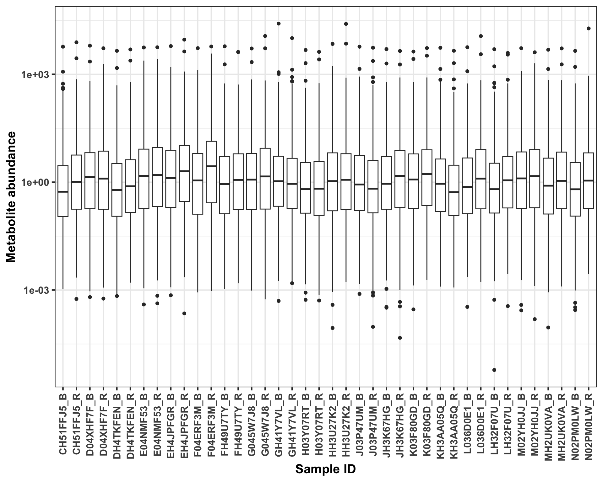
# Zero-valued data points are removed.Perform VSN
Perform VSN (variance stabilizing normalization) on original data
exprMat <- as.matrix(assay(metaPlasma))
fit <- vsnMatrix(exprMat)
metaPlasmaNorm <- metaPlasma
assay(metaPlasmaNorm) <- predict(fit, exprMat)
# Save vsn normalized data
saveRDS(metaPlasmaNorm, './data/MethodDev/AG_Hell/metaPlasmaVsn.rds')
metaPlasmaNorm4Plot <- summExp2df(metaPlasmaNorm, assay = 'Abundance',
row_id = 'Metabolite', col_id = 'Sample')
ggplot(metaPlasmaNorm4Plot, aes(x=Sample, y=Value)) +
geom_boxplot() +
labs(x = 'Sample ID', y = 'Metabolite abundance') +
th + theme(axis.text.x = element_text(angle = 90, vjust = 0.5, hjust = 1))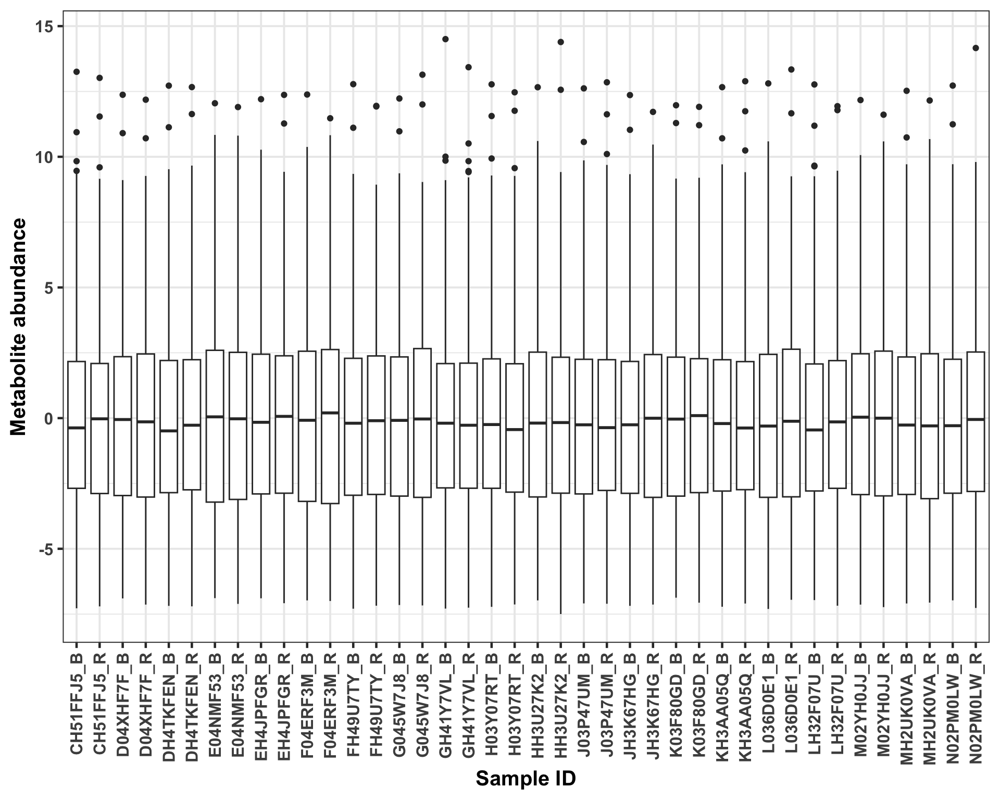
Show feature mean-variance relationship of vsn normalized data
vsn::meanSdPlot(assay(metaPlasmaNorm), ranks = T, plot = F, bins = 30)$gg +
labs(x = 'Rank of mean', y = 'SD') +
th
# Store median normalized data for computing log2(FC) later
exprMat <- as.matrix(assay(metaPlasma))
sampleAnno <- tibble::as_tibble(colData(metaPlasma), rownames = 'Sample')
metaPlasmaMediTab <- limma::normalizeBetweenArrays(exprMat, method = 'scale') %>%
tibble::as_tibble(rownames = 'Feature') %>%
tidyr::pivot_longer(cols = -'Feature',
names_to = 'Sample',
values_to = 'mediAbundance') %>%
dplyr::mutate(mediAbundance = log2(mediAbundance+0.0001)) %>%
dplyr::left_join(sampleAnno, by = 'Sample')
# ggplot(metaPlasmaMediTab, aes(x=Sample, y=mediAbundance)) +
# geom_boxplot() +
# th + theme(axis.text.x = element_text(angle = 90, vjust = 0.5, hjust = 1))
metaPlasmaMedi <- df2SummExp(metaPlasmaMediTab, row_id = 'Feature', col_id = 'Sample',
values = 'mediAbundance', col_anno = smpAnno)
# Save median normalized data
saveRDS(metaPlasmaMedi, './data/MethodDev/AG_Hell/metaPlasmaMedi.rds')Perform PCA
Use only top 100 metabolites that have high variance
exprMat <- assay(metaPlasmaNorm)
sd <- rowSds(exprMat)
exprMatSub <- exprMat[order(sd, decreasing = TRUE)[1:100],]
resPC <- prcomp(t(exprMatSub), center = TRUE, scale. = FALSE)
anno <- distinct(metaPlasmaTab, Sample, Patient, Condition)
metaPlasmaNorm4Plot <- resPC$x[,1:10] %>%
as.data.frame() %>%
rownames_to_column('Sample') %>%
left_join(anno, by = 'Sample')
ggplot(metaPlasmaNorm4Plot, aes(x=PC1, y=PC2, col=Condition, group=Patient)) +
geom_point() +
geom_line(col = 'grey50', linetype = 'dashed') +
th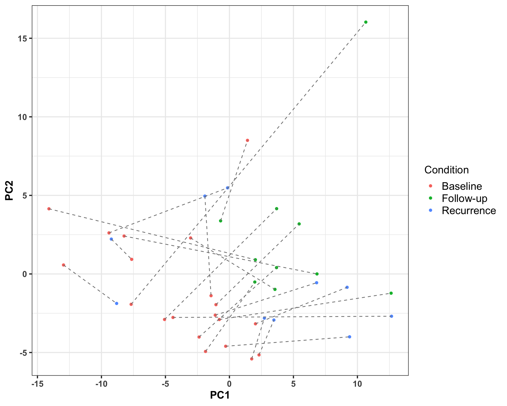
Use all metabolites
resPC2 <- prcomp(t(exprMat), center = TRUE, scale. = FALSE)
metaPlasmaNorm4Plot2 <- resPC2$x[, 1:10] %>%
as.data.frame() %>%
rownames_to_column('Sample')%>%
left_join(anno, by = 'Sample')
ggplot(metaPlasmaNorm4Plot2, aes(x=PC1, y=PC2, col=Condition, group=Patient)) +
geom_point() +
geom_line(col = 'grey50', linetype = 'dashed') +
th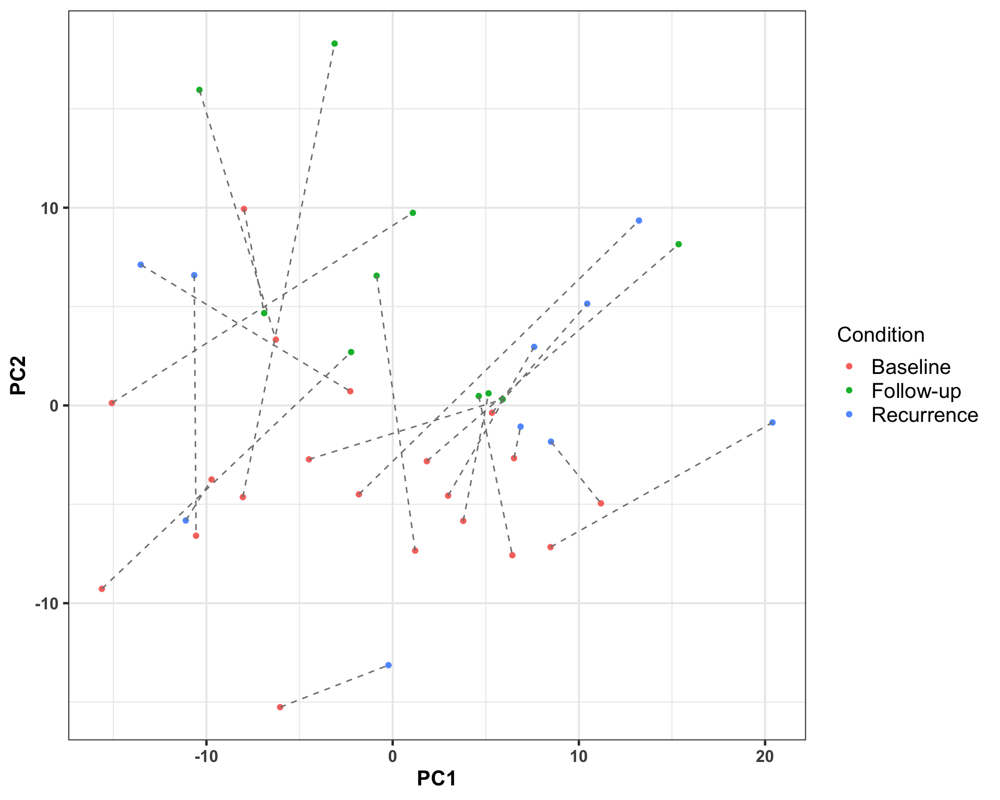
Tissue Metabolomics
# Clean up data and convert data to long data
metaTissueTab <- readxl::read_excel(
'./data/MethodDev/AG_Hell/Thorax cohort_not-normalized_subset tissue.xlsx',
skip = 1) %>%
dplyr::filter(!is.na(parents)) %>%
dplyr::select(-c(Sample_identification_cut, parents, patients_tissue, Individual_ID, Status)) %>%
dplyr::rename(Aliquot = `Sample Identification`) %>%
tidyr::pivot_longer(cols = -'Aliquot',
names_to = 'Metabolite',
values_to = 'Abundance') %>%
dplyr::mutate(Abundance = as.numeric(Abundance)) %>%
dplyr::left_join(summMetadat, by = 'Aliquot')
# Convert long data to SE object
metaTissue <- df2SummExp(metaTissueTab, row_id = 'Metabolite', col_id = 'Sample',
values = 'Abundance', col_anno = c(smpAnno, 'TumorPurity'))Display dimensions of processed data (40 samples and 630 features)
dim(metaTissue)[1] 630 40Display 3 NA data points in this dataset
dplyr::filter(metaTissueTab, is.na(Abundance)) %>%
dplyr::select(Metabolite, Abundance, Sample, Condition)# A tibble: 3 × 4
Metabolite Abundance Sample Condition
<chr> <dbl> <chr> <chr>
1 Ala NA HH3U27K2_TG Tumor
2 Histamine NA F04ERF3M_TG Tumor
3 Histamine NA E04NMF53_TG Tumor # Values of these data points were infinite (character) before converting them to
# numeric class.Display distribution of original data
metaTissue4Plot <- summExp2df(metaTissue, assay = 'Abundance',
row_id = 'Metabolite', col_id = 'Sample')
ggplot(metaTissue4Plot, aes(x=Sample, y=Value)) +
geom_boxplot() +
scale_y_log10() +
labs(x = 'Sample ID', y = 'Metabolite abundance') +
th + theme(axis.text.x = element_text(angle = 90, vjust = 0.5, hjust = 1))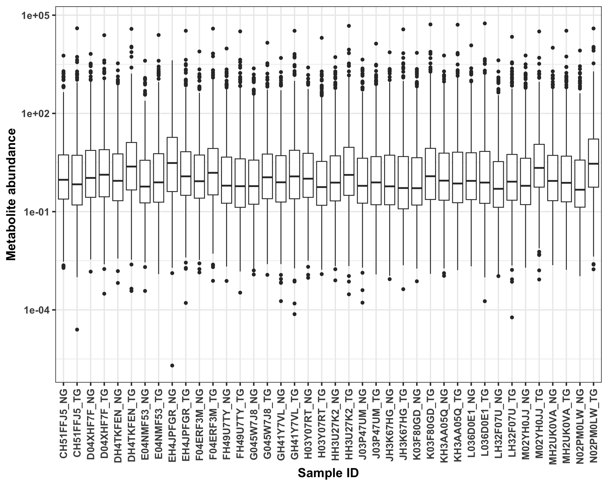
# There are 3 NA data points and 756 zeros.Perform VSN
exprMat <- as.matrix(assay(metaTissue))
fit <- vsnMatrix(exprMat)
metaTissueNorm <- metaTissue
assay(metaTissueNorm) <- predict(fit, exprMat)
# Save vsn normalized data
saveRDS(metaTissueNorm, './data/MethodDev/AG_Hell/metaTissueVsn.rds')
metaTissueNorm4Plot <- summExp2df(metaTissueNorm, assay = 'Abundance',
row_id = 'Metabolite', col_id = 'Sample')
ggplot(metaTissueNorm4Plot, aes(x=Sample, y=Value)) +
geom_boxplot() +
labs(x = 'Sample ID', y = 'Metabolite abundance') +
th + theme(axis.text.x = element_text(angle = 90, vjust = 0.5, hjust = 1))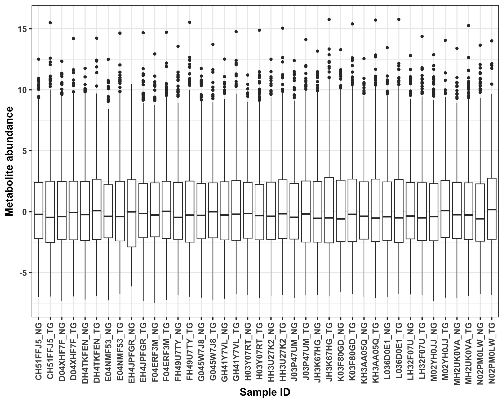
Show feature mean-variance relationship of vsn normalized data
vsn::meanSdPlot(assay(metaTissueNorm), ranks = T, plot = F, bins = 30)$gg +
labs(x = 'Rank of mean', y = 'SD') +
th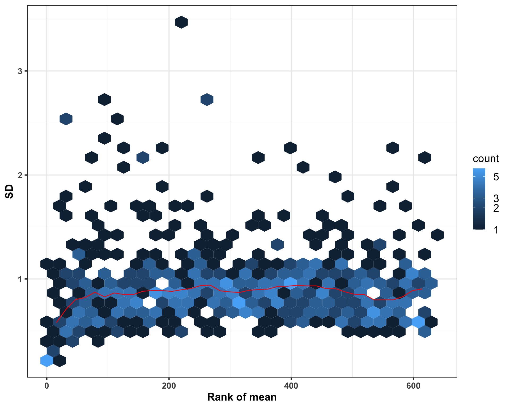
# Store median normalized data for computing log2(FC)
exprMat <- as.matrix(assay(metaTissue))
sampleAnno <- tibble::as_tibble(colData(metaTissue), rownames = 'Sample')
metaTissueMediTab <- limma::normalizeBetweenArrays(exprMat, method = 'scale') %>%
tibble::as_tibble(rownames = 'Feature') %>%
tidyr::pivot_longer(cols = -'Feature',
names_to = 'Sample',
values_to = 'mediAbundance') %>%
dplyr::mutate(mediAbundance = log2(mediAbundance+0.0001)) %>%
dplyr::left_join(sampleAnno, by = 'Sample')
# ggplot(metaTissueMediTab, aes(x=Sample, y=mediAbundance)) +
# geom_boxplot() +
# th + theme(axis.text.x = element_text(angle = 90, vjust = 0.5, hjust = 1))
metaTissueMedi <- df2SummExp(metaTissueMediTab, row_id = 'Feature', col_id = 'Sample',
values = 'mediAbundance', col_anno = c(smpAnno, 'TumorPurity'))
# Save median normalized data
saveRDS(metaTissueMedi, './data/MethodDev/AG_Hell/metaTissueMedi.rds')Perform PCA
Take an initial look at dataset for quality control
Use only top 100 metabolites that have high variance
exprMat <- assay(metaTissueNorm)
# Remove the metabolites containing non-applicable values (try to impute the
# missing values later)
exprMat <- exprMat[which(rownames(exprMat) != c('Ala', 'Histamine')),]
sd <- rowSds(exprMat)
exprMatSub <- exprMat[order(sd, decreasing = TRUE)[1:100],]
resPC <- prcomp(t(exprMatSub), center = TRUE, scale. = FALSE) # Each row is an
# observation, i.e., samples
anno <- dplyr::distinct(metaTissueTab, Sample, Patient, Condition)
metaTissueNorm4Plot <- resPC$x[, 1:10] %>%
as.data.frame() %>%
tibble::rownames_to_column('Sample') %>%
dplyr::left_join(anno, by = 'Sample')
ggplot(metaTissueNorm4Plot, aes(x=PC1, y=PC2, col=Condition, group=Patient)) +
geom_point() +
geom_line(col = 'grey50', linetype = 'dashed') +
th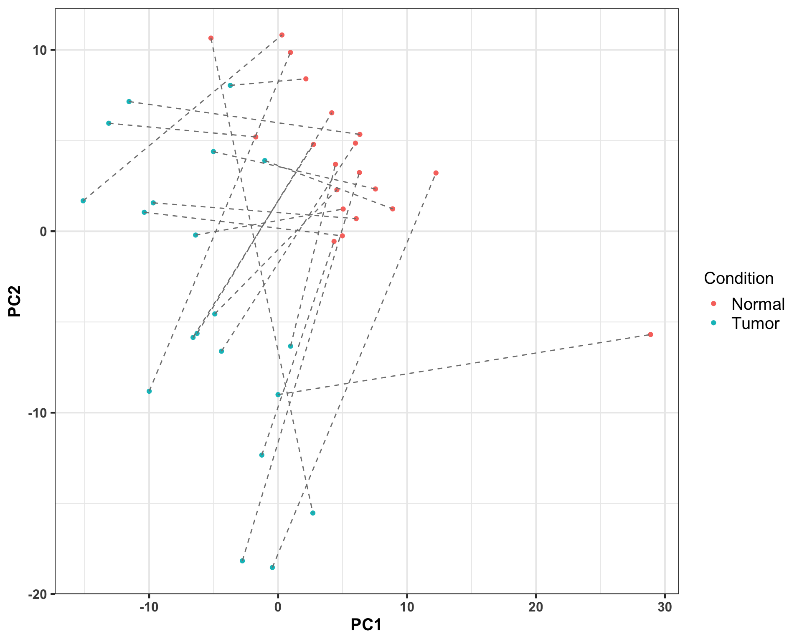
Use all metabolites except those three containing missing values
resPC2 <- prcomp(t(exprMat), center = TRUE, scale. = FALSE)
metaTissueNorm4Plot2 <- resPC2$x[, 1:10] %>%
as.data.frame() %>%
tibble::rownames_to_column('Sample') %>%
dplyr::left_join(anno, by = 'Sample')
ggplot(metaTissueNorm4Plot2, aes(x=PC1, y=PC2, col=Condition, group=Patient)) +
geom_point() +
geom_line(col = 'grey50', linetype = 'dashed') +
th
Tissue Proteomics
# Abundance data
proTissueTab <- readxl::read_excel(
'./data/MethodDev/AG_Krijgsveld/20211119_151605_20211104_TMMS_Tissue_Report.xlsx',
sheet = 1) %>%
dplyr::select(PG.Genes, PG.ProteinGroups, contains('oecf4')) %>%
# Convert messy data to tidy table
tidyr::pivot_longer(cols = -c('PG.Genes', 'PG.ProteinGroups'),
names_to = 'Sample_IDs',
values_to = 'Abundance') %>%
dplyr::mutate(Abundance = as.numeric(Abundance)) %>%
dplyr::group_by(PG.Genes, PG.ProteinGroups, Sample_IDs) %>%
# Determine a single numeric value for a protein of a sample if multiple
# identical protein measures of a sample exist
dplyr::summarise(Abundance = mean(Abundance, na.rm = TRUE)) %>%
dplyr::ungroup() %>%
dplyr::filter(!is.na(Abundance))
# Column PG.ProteinGroups has no overlap and column PG.Genes has few overlaps (
# TMPO:2 and NA:5) because some genes can encode multiple protein isoforms through
# RNA splicing.
# 19 protein groups are not present in any samples (Abundance = NaN).# Annotation data
proTissueAnno <- readxl::read_excel(
'./data/MethodDev/AG_Krijgsveld/20211119_151605_20211104_TMMS_Tissue_Report.xlsx',
sheet = 2) %>%
dplyr::select(Sample_IDs, Identifier) %>%
rename(Aliquot = Identifier) %>%
dplyr::mutate(Aliquot = str_remove(Aliquot, '/THRX_SPACE/'),
id = paste0('smp', seq(nrow(.)))) %>%
dplyr::left_join(summMetadat, by = 'Aliquot')Show dimensions of processed data (40 samples and 5193 features)
# Combine processed Abundance and annotation data
proTissueTab <- dplyr::left_join(proTissueTab, proTissueAnno, by = 'Sample_IDs')
# Convert tidy table to value matrix for further analysis
proTissue <- df2SummExp(proTissueTab, row_id = 'PG.ProteinGroups', col_id = 'id',
values = 'Abundance', row_anno = 'PG.Genes',
col_anno = c(smpAnno, 'TumorPurity', 'Sample'))
dim(proTissue)[1] 5193 40View distribution of original data to see if there is technical noise
# Convert value matrix to long data for making plot
proTissue4Plot <- summExp2df(proTissue, assay = 'Abundance',
row_id = 'PG.ProteinGroups', col_id = 'id')
ggplot(proTissue4Plot, aes(x=id, y=Value)) +
geom_boxplot() +
scale_y_log10() +
labs(x = 'Sample ID', y = 'Protein abundance') +
th + theme(axis.text.x = element_text(angle = 90, vjust = 0.5, hjust = 1))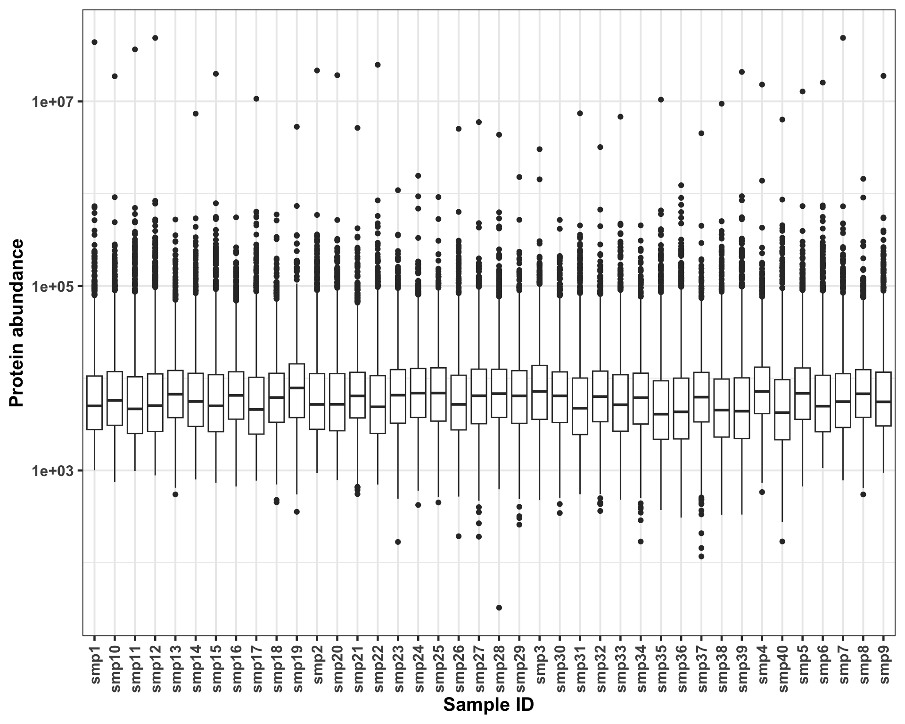
Perform VSN
exprMat <- as.matrix(assay(proTissue))
fit <- vsnMatrix(exprMat)
proTissueNorm <- proTissue
assay(proTissueNorm) <- predict(fit, exprMat)
proTissueNorm4Plot <- summExp2df(proTissueNorm, assay = 'Abundance',
row_id = 'PG.ProteinGroups', col_id = 'id')
ggplot(proTissueNorm4Plot, aes(x=id, y=Value)) +
geom_boxplot() +
labs(x = 'Sample ID', y = 'Protein abundance') +
th + theme(axis.text.x = element_text(angle = 90, vjust = 0.5, hjust = 1))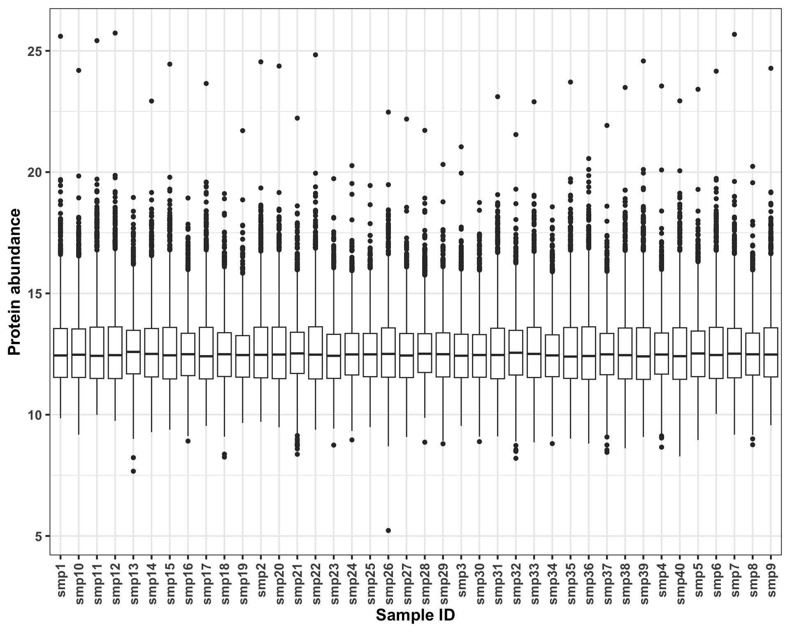
Show feature mean-variance relationship of vsn normalized data
vsn::meanSdPlot(assay(proTissueNorm), ranks = T, plot = F)$gg +
labs(x = 'Rank of mean', y = 'SD') +
th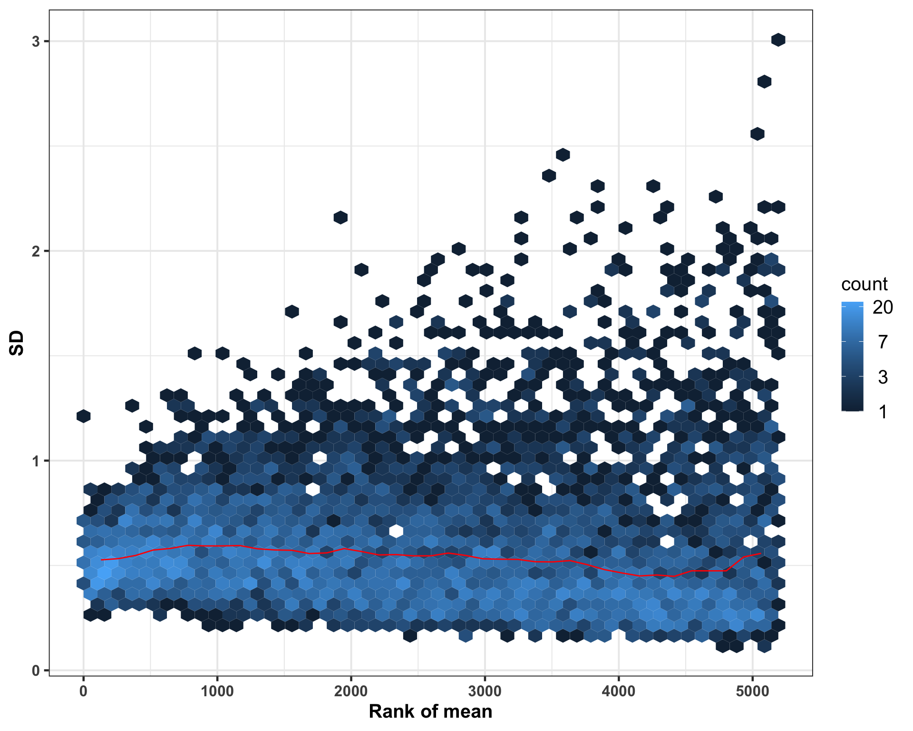
Perform PCA
Take an initial look at dataset for quality control
# prcomp()'s parameter *center* is set to TRUE (Check effects of parameters *center*
# and *scale.*)
exprMat <- assay(proTissueNorm)
sd <- rowSds(exprMat)
exprMatSub <- exprMat[order(sd, decreasing = TRUE)[1:1000],]
resPC <- prcomp(t(exprMatSub), center = TRUE, scale. = FALSE) # Each row is an
# observation, i.e., samples
anno <- dplyr::distinct(proTissueTab, id, Patient, Condition)
proTissueNorm4Plot <- resPC$x[, 1:10] %>%
as.data.frame() %>%
tibble::rownames_to_column('id') %>%
dplyr::left_join(anno, by = 'id')
ggplot(proTissueNorm4Plot, aes(x=PC1, y=PC2, col=Condition, group=Patient)) +
geom_text_repel(aes(label=id), show.legend = F) +
geom_point() +
geom_line(col = 'grey50', linetype = 'dashed') +
th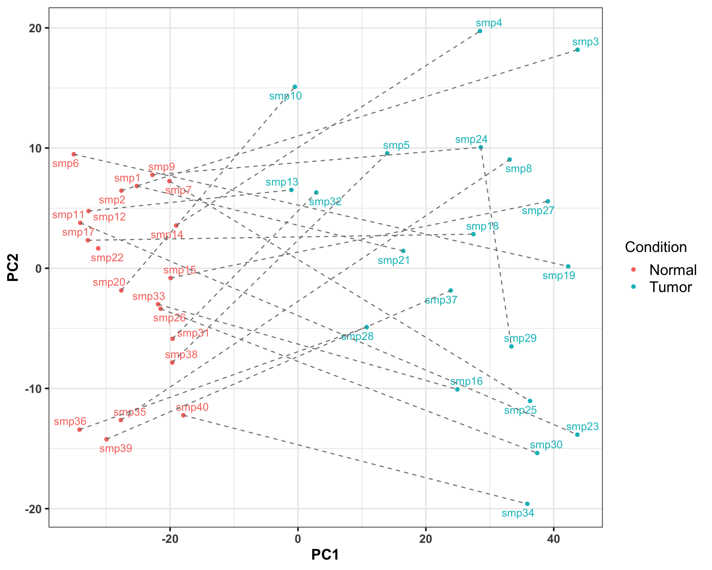
Patient “AHTYU035” has two tumor samples (smp24, smp29) and one normal
sample (smp9).
Patient “P3457YLC” does not have a paired tumor sample (smp22).
It is very probably mislabeling. If not, check correlation between two
tumor samples from the same patient to get further idea.
# Manually modify potential mislabeling for now
ids <- colnames(proTissueNorm)
colnames(proTissueNorm) <- colData(proTissueNorm)$Sample
colnames(proTissueNorm)[which(ids == 'smp29')] <- 'F04ERF3M_TG'
colData(proTissueNorm)$Sample <- colnames(proTissueNorm)
colData(proTissueNorm)$Patient[which(ids == 'smp29')] <- 'P3457YLC'
colData(proTissueNorm)$Recurrence[which(ids == 'smp29')] <- 'Yes'
colData(proTissueNorm)$Age[which(ids == 'smp29')] <- 68
colData(proTissueNorm)$Adjuvant[which(ids == 'smp29')] <- 'False'
# Remove redundant Sample column in column annotation table
colData(proTissueNorm) <- colData(proTissueNorm)[, -which(colnames(colData(proTissueNorm)) == 'Sample')]
# Save vsn normalized data
saveRDS(proTissueNorm, './data/MethodDev/AG_Krijgsveld/proTissueVsn_DDA.rds')# Store median normalized data for computing log2(FC)
# Manually modify potential mislabeling for now
ids <- colnames(proTissue)
colnames(proTissue) <- colData(proTissue)$Sample
colnames(proTissue)[which(ids == 'smp29')] <- 'F04ERF3M_TG'
colData(proTissue)$Sample <- colnames(proTissue)
colData(proTissue)$Patient[which(ids == 'smp29')] <- 'P3457YLC'
colData(proTissue)$Recurrence[which(ids == 'smp29')] <- 'Yes'
colData(proTissue)$Age[which(ids == 'smp29')] <- 68
colData(proTissue)$Adjuvant[which(ids == 'smp29')] <- 'False'
exprMat <- as.matrix(assay(proTissue))
sampleAnno <- tibble::as_tibble(colData(proTissue))
featAnno <- tibble::as_tibble(rowData(proTissue), rownames = 'Feature')
proTissueMediTab <- limma::normalizeBetweenArrays(exprMat, method = 'scale') %>%
tibble::as_tibble(rownames = 'Feature') %>%
tidyr::pivot_longer(cols = -'Feature',
names_to = 'Sample',
values_to = 'mediAbundance') %>%
dplyr::mutate(mediAbundance = log2(mediAbundance)) %>%
dplyr::left_join(sampleAnno, by = 'Sample') %>%
dplyr::left_join(featAnno, by = 'Feature')
# ggplot(proTissueMediTab, aes(x=Sample, y=mediAbundance)) +
# geom_boxplot() +
# th + theme(axis.text.x = element_text(angle = 90, vjust = 0.5, hjust = 1))
proTissueMedi <- df2SummExp(proTissueMediTab, row_id = 'Feature', col_id = 'Sample',
values = 'mediAbundance', row_anno = 'PG.Genes',
col_anno = c(smpAnno, 'TumorPurity'))
# Save median normalized data
saveRDS(proTissueMedi, './data/MethodDev/AG_Krijgsveld/proTissueMedi_DDA.rds')Plasma Proteomics
# Abundance data
proPlasmaTab <- readxl::read_excel(
'./data/MethodDev/AG_Krijgsveld/20211119_133842_20211018_TMMS_TRX_plasma_Report.xlsx'
, sheet = 1) %>%
dplyr::select(PG.Genes, PG.ProteinGroups, contains('oecf4')) %>%
pivot_longer(cols = -c('PG.Genes', 'PG.ProteinGroups'),
names_to = 'Sample_IDs',
values_to = 'Abundance') %>%
mutate(Abundance = as.numeric(Abundance)) %>%
group_by(PG.Genes, PG.ProteinGroups, Sample_IDs) %>%
summarise(Abundance = mean(Abundance, na.rm = TRUE)) %>%
ungroup() %>%
filter(!is.na(Abundance))
# Column PG.ProteinGroups has no overlap and column PG.Genes has few overlaps (NA:5).# Annotation data
proPlasmaAnno <- readxl::read_excel(
'./data/MethodDev/AG_Krijgsveld/20211119_133842_20211018_TMMS_TRX_plasma_Report.xlsx',
sheet = 2) %>%
dplyr::select(Sample_IDs, Identifier) %>%
rename(Aliquot = Identifier) %>%
mutate(Aliquot = str_remove(Aliquot, '/THRX_SPACE/')) %>%
left_join(summMetadat, by = 'Aliquot')Show dimensions of processed data (40 samples and 435 features)
proPlasmaTab <- left_join(proPlasmaTab, proPlasmaAnno, by = 'Sample_IDs')
proPlasma <- df2SummExp(proPlasmaTab, row_id = 'PG.ProteinGroups', col_id = 'Sample',
values = 'Abundance', row_anno = 'PG.Genes', col_anno = smpAnno)
dim(proPlasma)[1] 435 40Display distribution of original data
proPlasma4Plot <- summExp2df(proPlasma, assay = 'Abundance',
row_id = 'PG.ProteinGroups', col_id = 'Sample')
ggplot(proPlasma4Plot, aes(x=Sample, y=Value)) +
geom_boxplot() +
scale_y_log10() +
labs(x = 'Sample ID', y = 'Protein Abundance') +
th + theme(axis.text.x = element_text(angle = 90, vjust = 0.5, hjust = 1))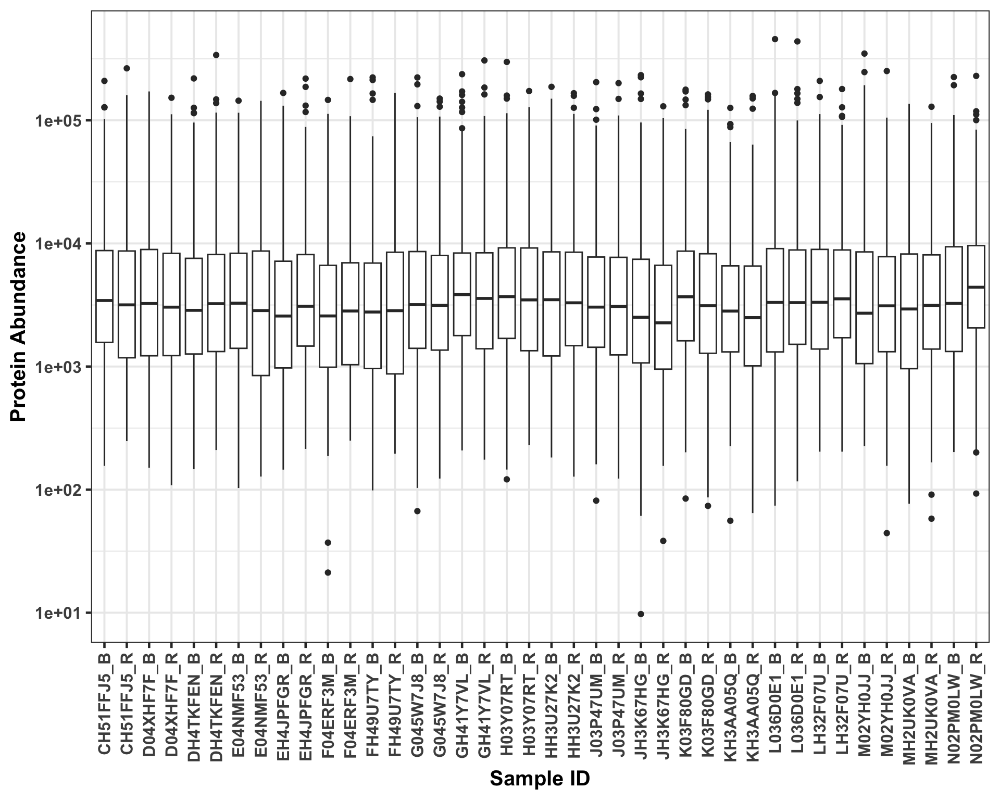
perform VSN
exprMat <- as.matrix(assay(proPlasma))
fit <- vsnMatrix(exprMat)
proPlasmaNorm <- proPlasma
assay(proPlasmaNorm) <- predict(fit, exprMat)
# Save vsn normalized data
saveRDS(proPlasmaNorm, './data/MethodDev/AG_Krijgsveld/proPlasmaVsn_DDA.rds')
proPlasmaNorm4Plot <- summExp2df(proPlasmaNorm, assay = 'Abundance',
row_id = 'PG.ProteinGroups', col_id = 'Sample')
ggplot(proPlasmaNorm4Plot, aes(x=Sample, y=Value)) +
geom_boxplot() +
labs(x = 'Sample ID', y = 'Protein Abundance') +
th + theme(axis.text.x = element_text(angle = 90, vjust = 0.5, hjust = 1))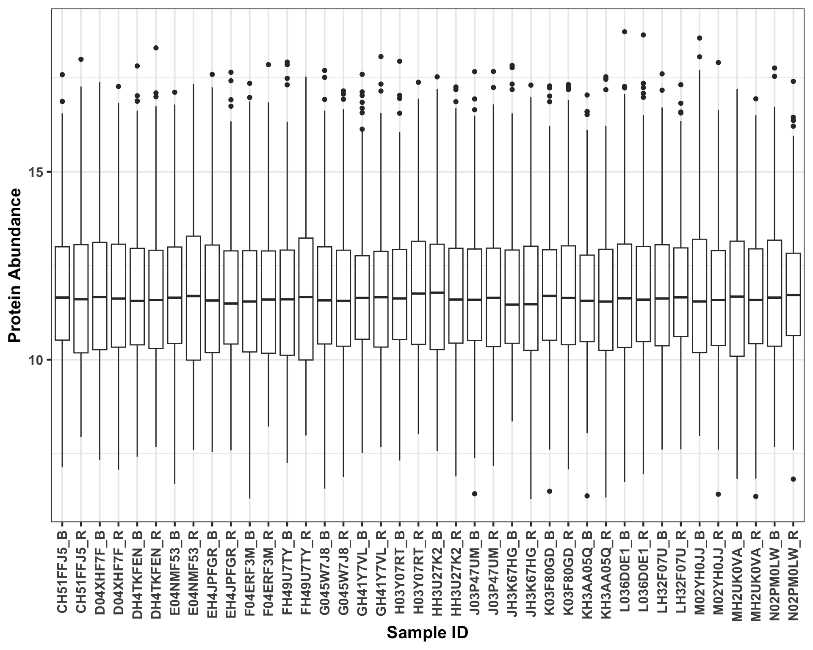
Show feature mean-variance relationship of vsn normalized data
vsn::meanSdPlot(assay(proPlasmaNorm), ranks = T, plot = F, bins = 30)$gg +
labs(x = 'Rank of mean', y = 'SD') +
th
# Store median normalized data for computing log2(FC)
exprMat <- as.matrix(assay(proPlasma))
sampleAnno <- tibble::as_tibble(colData(proPlasma), rownames = 'Sample')
featAnno <- tibble::as_tibble(rowData(proPlasma), rownames = 'Feature')
proPlasmaMediTab <- limma::normalizeBetweenArrays(exprMat, method = 'scale') %>%
tibble::as_tibble(rownames = 'Feature') %>%
tidyr::pivot_longer(cols = -'Feature',
names_to = 'Sample',
values_to = 'mediAbundance') %>%
dplyr::mutate(mediAbundance = log2(mediAbundance)) %>%
dplyr::left_join(sampleAnno, by = 'Sample') %>%
dplyr::left_join(featAnno, by = 'Feature')
# ggplot(proPlasmaMediTab, aes(x=Sample, y=mediAbundance)) +
# geom_boxplot() +
# th + theme(axis.text.x = element_text(angle = 90, vjust = 0.5, hjust = 1))
proPlasmaMedi <- df2SummExp(proPlasmaMediTab, row_id = 'Feature', col_id = 'Sample',
values = 'mediAbundance', row_anno = 'PG.Genes', col_anno = smpAnno)
# Save median normalized data
saveRDS(proPlasmaMedi, './data/MethodDev/AG_Krijgsveld/proPlasmaMedi_DDA.rds')Perform PCA
exprMat <- assay(proPlasmaNorm)
resPC <- prcomp(t(exprMat), center = TRUE, scale. = FALSE)
anno <- dplyr::distinct(proPlasmaTab, Sample, Patient, Condition)
proPlasmaNorm4Plot <- resPC$x[, 1:10] %>%
as.data.frame() %>%
tibble::rownames_to_column('Sample') %>%
dplyr::left_join(anno, by = 'Sample')
ggplot(proPlasmaNorm4Plot, aes(x=PC1, y=PC2, col=Condition, group=Patient)) +
geom_point() +
geom_line(col = 'grey50', linetype = 'dashed') +
th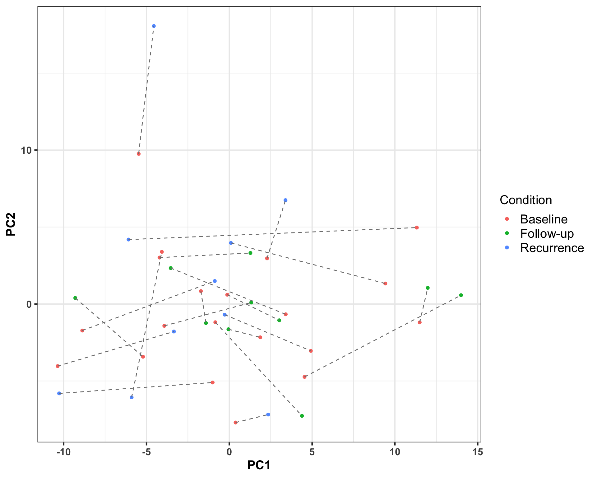
sessionInfo()R version 4.3.0 (2023-04-21)
Platform: aarch64-apple-darwin20 (64-bit)
Running under: macOS Ventura 13.4
Matrix products: default
BLAS: /Library/Frameworks/R.framework/Versions/4.3-arm64/Resources/lib/libRblas.0.dylib
LAPACK: /Library/Frameworks/R.framework/Versions/4.3-arm64/Resources/lib/libRlapack.dylib; LAPACK version 3.11.0
locale:
[1] en_US.UTF-8/en_US.UTF-8/en_US.UTF-8/C/en_US.UTF-8/en_US.UTF-8
time zone: Europe/Berlin
tzcode source: internal
attached base packages:
[1] stats4 stats graphics grDevices utils datasets methods
[8] base
other attached packages:
[1] proDA_1.14.0 limma_3.56.2
[3] pcaMethods_1.92.0 lubridate_1.9.2
[5] forcats_1.0.0 stringr_1.5.0
[7] dplyr_1.1.3 purrr_1.0.2
[9] tidyr_1.3.0 tibble_3.2.1
[11] tidyverse_2.0.0 ggrepel_0.9.4
[13] ggplot2_3.4.4 SummarizedExperiment_1.30.2
[15] GenomicRanges_1.52.0 GenomeInfoDb_1.36.1
[17] IRanges_2.34.1 S4Vectors_0.38.1
[19] MatrixGenerics_1.12.2 matrixStats_1.0.0
[21] pwr_1.3-0 vsn_3.68.0
[23] Biobase_2.60.0 BiocGenerics_0.46.0
[25] readxl_1.4.3 readr_2.1.4
[27] workflowr_1.7.0
loaded via a namespace (and not attached):
[1] tidyselect_1.2.0 farver_2.1.1 bitops_1.0-7
[4] fastmap_1.1.1 RCurl_1.98-1.12 promises_1.2.0.1
[7] digest_0.6.33 timechange_0.2.0 lifecycle_1.0.3
[10] processx_3.8.2 magrittr_2.0.3 compiler_4.3.0
[13] rlang_1.1.1 sass_0.4.7 tools_4.3.0
[16] utf8_1.2.4 yaml_2.3.7 knitr_1.43
[19] labeling_0.4.3 S4Arrays_1.0.4 DelayedArray_0.26.6
[22] withr_2.5.1 grid_4.3.0 preprocessCore_1.62.1
[25] fansi_1.0.5 git2r_0.32.0 colorspace_2.1-0
[28] scales_1.2.1 cli_3.6.1 rmarkdown_2.23
[31] crayon_1.5.2 generics_0.1.3 rstudioapi_0.15.0
[34] httr_1.4.6 tzdb_0.4.0 cachem_1.0.8
[37] affy_1.78.1 zlibbioc_1.46.0 BiocManager_1.30.21
[40] cellranger_1.1.0 XVector_0.40.0 vctrs_0.6.4
[43] Matrix_1.6-0 jsonlite_1.8.7 callr_3.7.3
[46] hms_1.1.3 hexbin_1.28.3 jquerylib_0.1.4
[49] affyio_1.70.0 glue_1.6.2 ps_1.7.5
[52] stringi_1.7.12 gtable_0.3.4 later_1.3.1
[55] munsell_0.5.0 pillar_1.9.0 htmltools_0.5.5
[58] GenomeInfoDbData_1.2.10 R6_2.5.1 rprojroot_2.0.3
[61] evaluate_0.21 lattice_0.21-8 highr_0.10
[64] httpuv_1.6.11 bslib_0.5.0 Rcpp_1.0.11
[67] whisker_0.4.1 xfun_0.39 fs_1.6.2
[70] getPass_0.2-2 pkgconfig_2.0.3